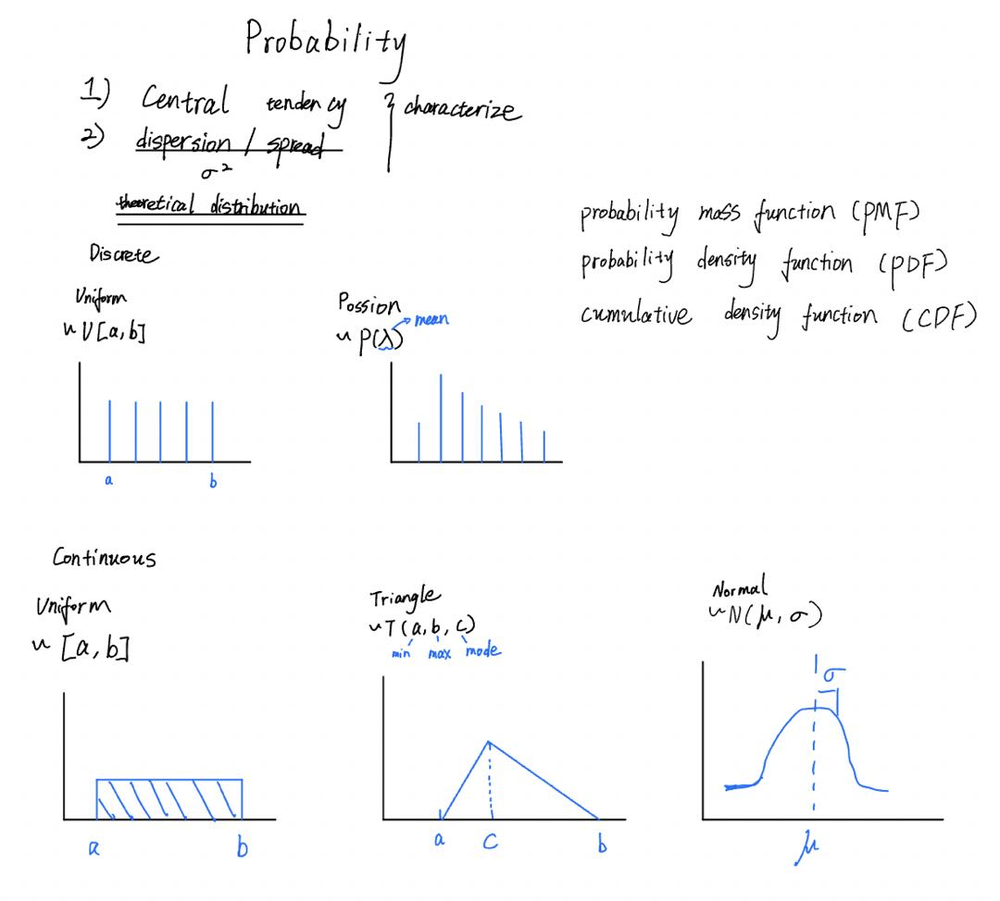
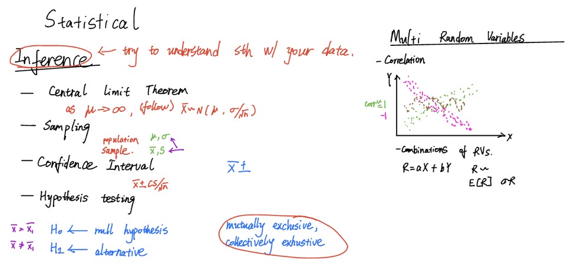
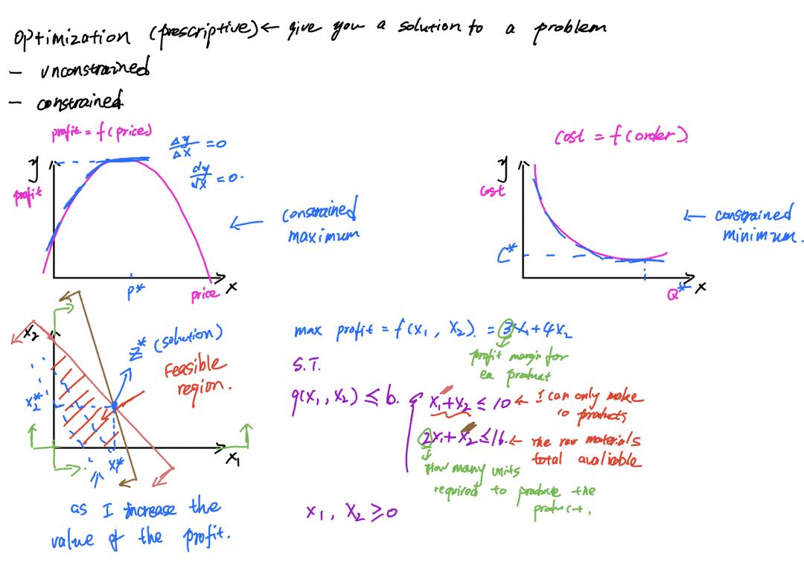
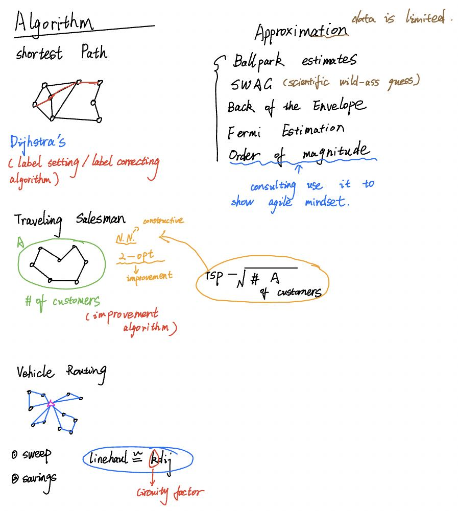

SC0X: Supply Chain Analytics
This course introduces and explains the analytical methods generally used by logistics and supply chain practitioners. The course covers topics with a focus on: basic data management (cleaning, handling etc.), Probability (random variables, continuous and discrete distributions, measurement, etc.), Statistics (sampling and inference, hypothesis testing, regression, etc.), Simulation (Monte Carlo, Discrete Time period), and Optimization (classic unconstrained, network models, and linear, integer and mixed linear programs). The focus is on the application of these techniques and methodologies to problems in the supply chain space.
Probability
1. Apply descriptive statistics.
2. Differentiate between continuous and discrete random variable distributions.
3. Review major distributions: Uniform, Poisson, Normal, and Triangle.
4. Recognize and apply probability mass functions (pmf), probability density functions (pdf), and cumulative density functions (cdf).
Statistics
1. Understand how to work with multiple variables.
2. Be aware of data limitations with size and representation of population.
3. Identify how to test a hypothesis.
4. Review and apply the steps in the practice of regression.
5. Be able to analyze regression models and recognize potential issues.
Optimization
1. Understand how to work with multiple variables.
2. Be aware of data limitations with size and representation of population.
3. Identify how to test a hypothesis.
4. Review and apply the steps in the practice of regression.
5. Be able to analyze regression models and recognize potential issues.
4. Review and apply the steps in the practice of regression.
5. Be able to analyze regression models and recognize potential issues.
Algorithms, Approximations and Simulation
1.Review the basic components and properties of algorithms.
2. Review different network algorithms to solve typical transportation problems (Shortest Path, Traveling Salesman Problem, Vehicle Routing).
3. Review how to use approximations.
4. Learn the appropriate steps to make quick estimations.
5. Review the steps to develop a simulation model.
6. Understand when to use a simulation, and when not to use it.
